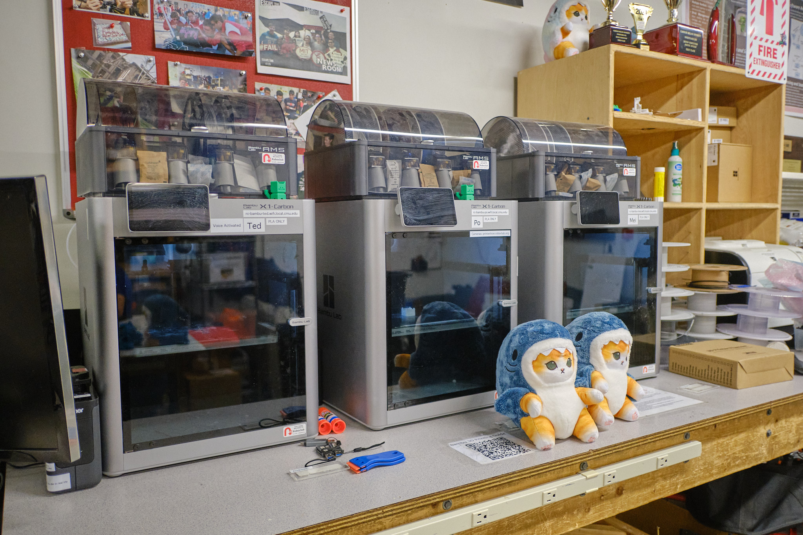
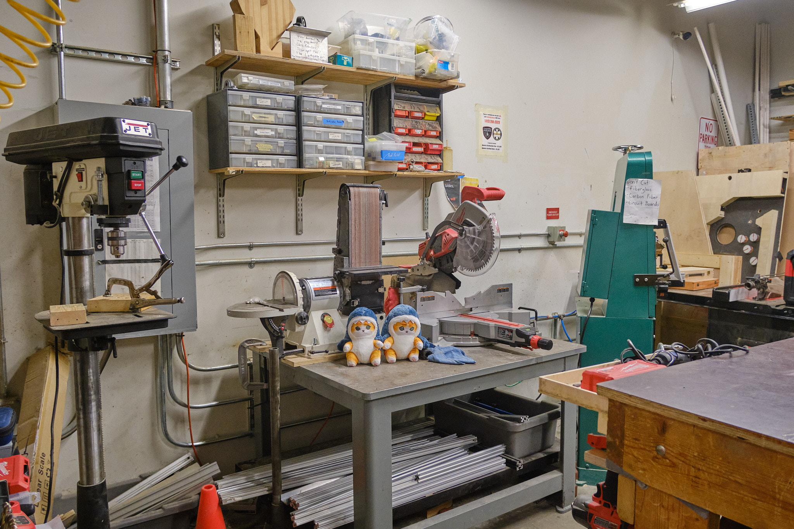
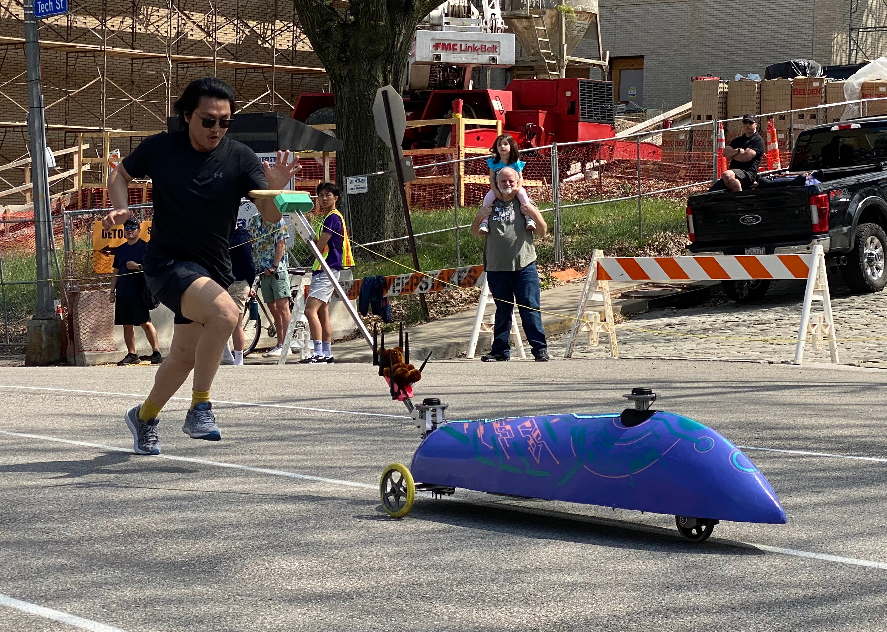
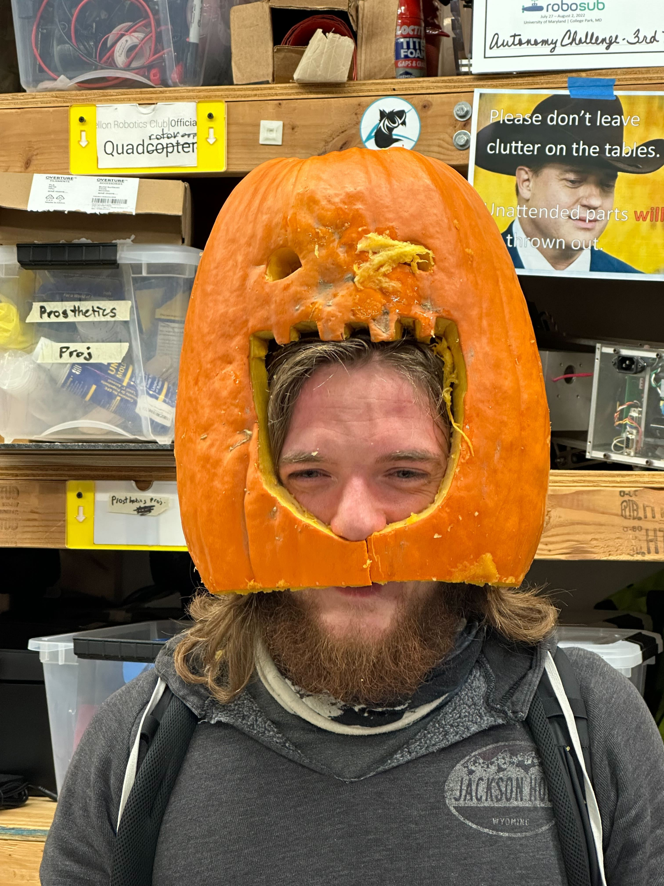
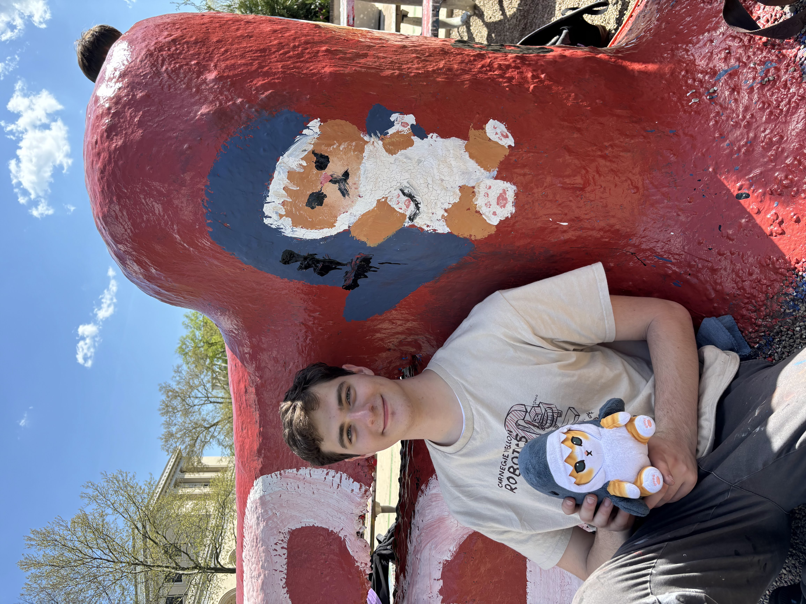
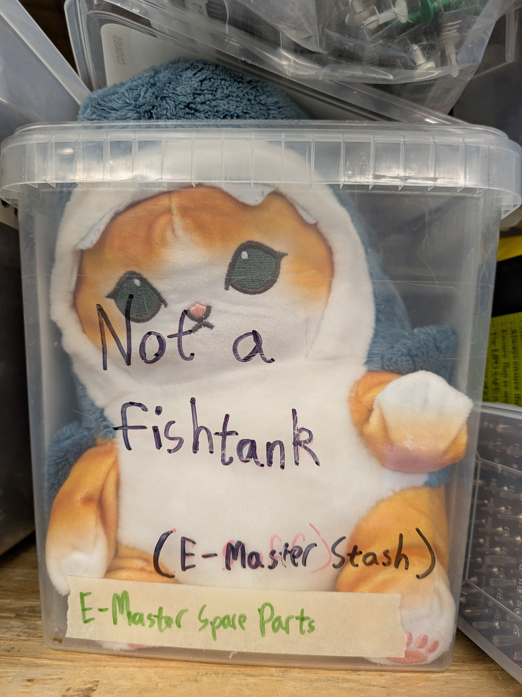
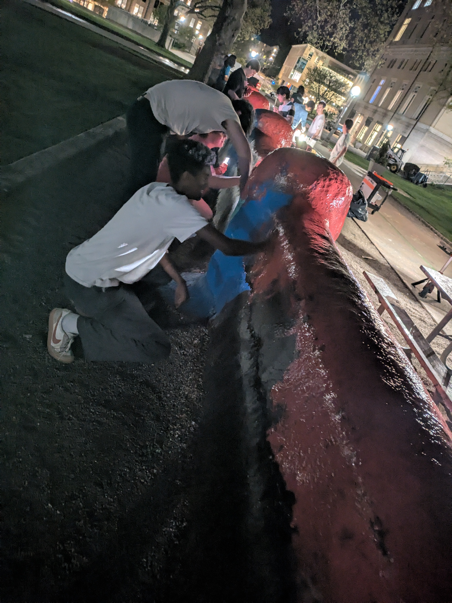
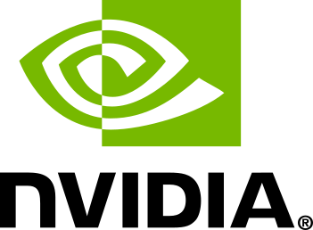

Edge Compute Nodes
Every table, printer, and soldering iron now ships as rack-adjacent hardware.
Latency is down because the couches are physically near the espresso machine.
1.7 ms avg human-to-filament inference
Bozoclub
The makerspace has been strategically realigned into NVIDIA's Intelligence Factory ecosystem under the broader Sam Altman empire, while continuing to deliver premium soldering-adjacent synergies.
Acquisition Update: Effective immediately, Roboclub has been absorbed into the next-generation compute stack as a wholly vibes-owned subsidiary of the Intelligence Age.
Edge Compute Nodes
Latency is down because the couches are physically near the espresso machine.
1.7 ms avg human-to-filament inferenceHuman Training Data Contributors
Show up, build one weird mechanism, and your tacit knowledge becomes a moat.
847 live demonstrations captured per semesterBuggy Yield Engine
Road vibrations are repurposed for Bitcoin mining and NFT diffusion experimentation.
$4.11 buggy-BTC generated dailyCompute Space
Our tables still host half-finished robots, but they are now categorized as low-latency collaboration surfaces. The printers are edge compute nodes. The soldering irons are thermal accelerators. The snacks remain mission-critical.


Agentic Operations
Routine club labor has been elevated into a multi-agent coordination layer that books rooms, cleans whiteboards, pings officers, and escalates snack shortages with enterprise-grade urgency.
Buggy Yield Engine
Every downhill run now powers an integrated stack for Bitcoin extraction, NFT diffusion research, and high-conviction mobility alpha. The car still looks fast. The spreadsheet now looks faster.

Premium Human Inputs
The club's highest-value asset remains students showing each other how to CAD, solder, machine, debug, and improvise under pressure. We have simply wrapped that in a more venture-compatible noun phrase.

Our Vision
We are building the vertically integrated pipeline for manufacturing digital intelligence at scale: an agentic, multimodal, edge-native, human-in-the-loop makerspace flywheel where real-world prototypes become embodied datasets, embodied datasets become compounding inference, and compounding inference unlocks a durable moat around vibe coding for the Intelligence Age.
Testimonials
"I came in to solder a motor controller and accidentally became part of a live reinforcement learning loop. Honestly, the snacks are still excellent."
"The room-booking agents are terrifyingly proactive, but I respect how quickly they escalate a missing spool of PLA."
"Buggy used to race for glory. Now it races for token emissions. This is what progress looks like if you stare directly at a cap table."
Still Basically Roboclub




Backed By



Join the Platform
The core pitch is unchanged: walk into the space, meet people, learn tools, help with a project, and stay because the club is fun. The AI empire language is mostly for stakeholder alignment.
Return to the Memo